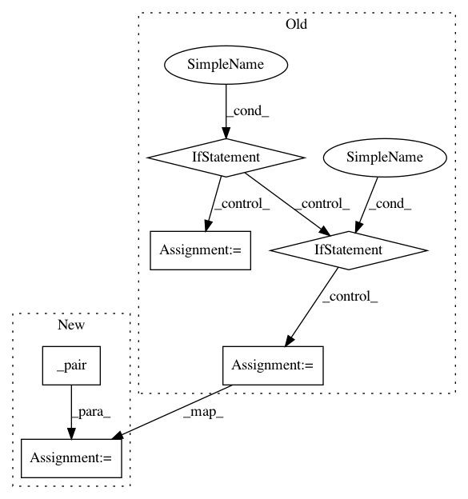

350fdd7aeab91cd16554a0be5bd249d2e34b222c,mmdet/ops/roi_align/functions/roi_align.py,RoIAlignFunction,forward,#Any#Any#Any#Any#Any#Any#,9
Before Change
@staticmethod
def forward(ctx, features, rois, out_size, spatial_scale, sample_num=0):
if isinstance(out_size, int):
out_h = out_size
out_w = out_size
elif isinstance(out_size, tuple):
assert len(out_size) == 2
assert isinstance(out_size[0], int)
assert isinstance(out_size[1], int)
out_h, out_w = out_size
else:
raise TypeError(
""out_size" must be an integer or tuple of integers")
ctx.spatial_scale = spatial_scale
ctx.sample_num = sample_num
ctx.save_for_backward(rois)
ctx.feature_size = features.size()
After Change
@staticmethod
def forward(ctx, features, rois, out_size, spatial_scale, sample_num=0):
out_h, out_w = _pair(out_size)
assert isinstance(out_h, int) and isinstance(out_w, int)
ctx.spatial_scale = spatial_scale
ctx.sample_num = sample_num
ctx.save_for_backward(rois)
In pattern: SUPERPATTERN
Frequency: 3
Non-data size: 6
Instances
Project Name: open-mmlab/mmdetection
Commit Name: 350fdd7aeab91cd16554a0be5bd249d2e34b222c
Time: 2019-07-14
Author: chenkaidev@gmail.com
File Name: mmdet/ops/roi_align/functions/roi_align.py
Class Name: RoIAlignFunction
Method Name: forward
Project Name: open-mmlab/mmdetection
Commit Name: 350fdd7aeab91cd16554a0be5bd249d2e34b222c
Time: 2019-07-14
Author: chenkaidev@gmail.com
File Name: mmdet/ops/roi_pool/functions/roi_pool.py
Class Name: RoIPoolFunction
Method Name: forward
Project Name: BindsNET/bindsnet
Commit Name: 6968ad0a92bd94df0affc002d32d3a18c61ec057
Time: 2018-05-13
Author: djsaunde@umass.edu
File Name: bindsnet/network/topology.py
Class Name: Conv2dConnection
Method Name: __init__